Using Python, I developed a computer model of a chosen disaster risk scenario – Droughts. Model uses data collected from my own embedded system
Advanced Req. 2:
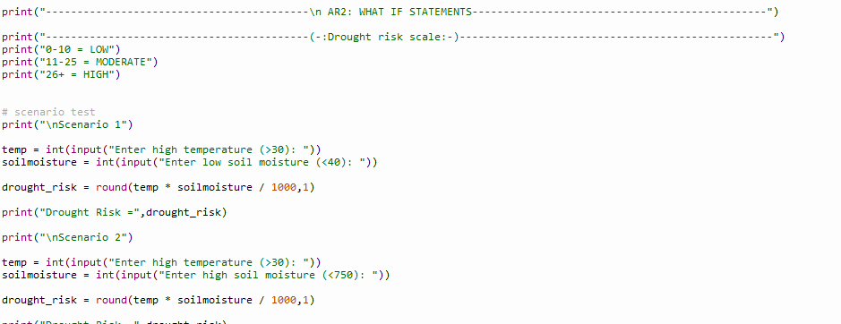
Q1. If the temp. Is very high and soil moisture is quite low?
=The user may add both the high temperature value and low moisture value of their choice and in result get a high-risk
Q2. If both the temperature and moisture are high?
=The user may append the appropriate values of their choice and in return should get a low value as high moisture means less chance of drought.
Advanced Req. 3:
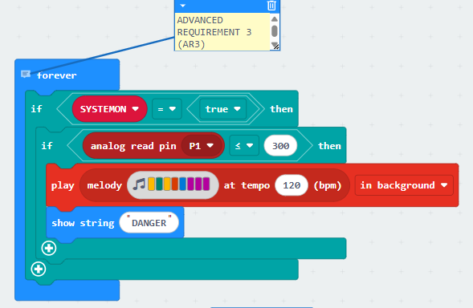
A feedback mechanism that enables it to adapt automatically to changing conditions i.e. triggering an alert when drought risk is Dangerous.
Basic Req. 1:
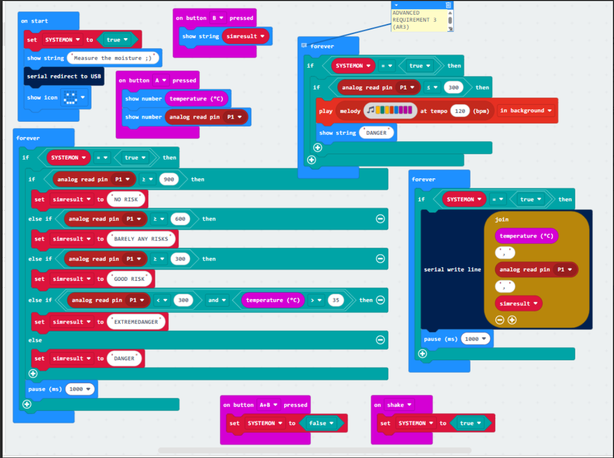
Functional embedded system with 1 analogue and 1 digital input, generates primary output as temperature and moisture displayed, can be started and turned off manually but works automatically.
Basic Req. 2:
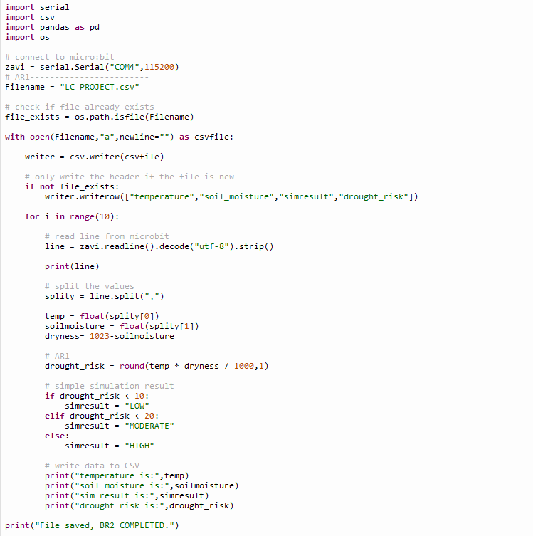
Embedded system collects and store environmental data in a csv file that relates to my theme of droughts.
Basic Req. 3:
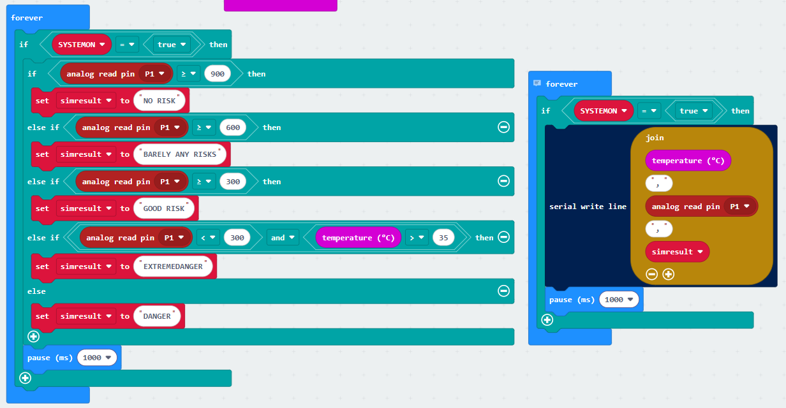
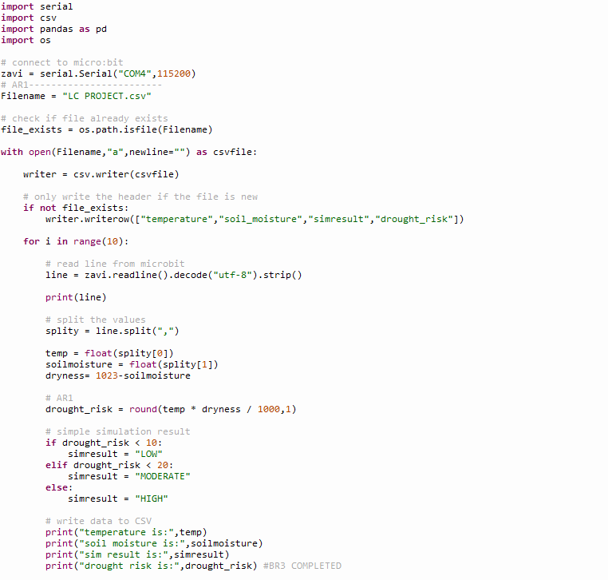
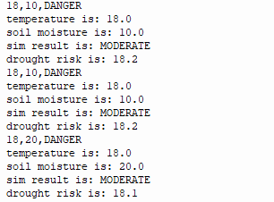
The system simulates a real-world process related to the theme, i.e. drought risk and runs tests to show how the system responds using different inputs.
Investigation
The brief introduces us to the risks to the wildlife and the environment we are currently facing. According to teagasc.ie , work is being done to reverse the effect of the loss of biodiversity and environment dangers in the last few years.
Research:
Due to the rapidly rising Global Temperature droughts are becoming common with every passing year. According to nature.com “during the past 5 years (2018–2022), the areas in drought have expanded by 74% on average compared with 1981–2017”. Drought severity is measured in the SPEI which is a utilized drought assessment tool.
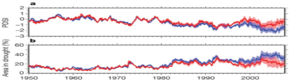
While developing my own system I took inspiration from some existing drought prediction systems too. In particular, "the Global Integrated Drought Monitoring and Prediction System (GIDMaPS) which uses historical and current precipitation and soil-moisture data then computes indices such as the Standardized Precipitation Index (SPI) and Standardized Soil Moisture Index (SSI) and applies a probabilistic seasonal forecasting approach to estimate the likelihood of drought months in advance."
I also looked at InfoSequia, a machine-learning enabled drought monitoring and forecasting system developed by futurewater.eu integrates satellite remote sensing with climate and vegetation data and produces locally tailored alerts and dashboards for water managers and decision-makers.
After a comprehensive read of the brief, I decided upon the idea of making the artefact: Drought Prediction System because it is the most viable to create for me because it can be easily made using tools like microbit and the python coding is quite interesting for me to do as well and also because the information on nature.com and futurewater.eu inspired me.
After my research, I concluded that some possible solutions could be:
Solution 1:One solution can be measuring the soil moisture readings and using them to determine when and where the land needs to be watered so it does not dry out.
Solution 2: High temperatures massively contribute to why droughts take place as they dry up the soil. A temperature sensor can be used to measure the temperature anywhere so a risk is detected.
Solution 3:Taking the readings of the light levels can also be very beneficial as low light levels with low soil moisture can increase the chances of drought.
1.Soil moisture sensor extension- can be used to actively measure soil moisture readings, consequently alerting the user if necessary.
2.In-built microbit temperature sensor- used to detect the temperature at a given place and instance, which can also indicate the possibility of a drought.
3.In-built light sensor of the microbit can be used to quantify the light level at a piece of land or plant that doesn’t receive sufficient light so they can be accordingly watered.
Plan and Design
Different project options and justification of design choices:
Coming to the designing and planning part, I would have 3 possible project ideas in mind and they are as following:
1.Drought Prediction System- easy to create and vast amount of existing data online to be used + it is a massive problem worldwide due to rising temperature so it would be my pleasure to contribute.
2.Illegal Logging Detection System- great idea as well because it is a big problem nowadays and additionally not very hard to create with a bit of research as well.
3.Wildlife Protection System- I personally love the idea and it is very important to preserve wildlife but it can be a bit challenging to create compared to the 2 above.
After a comprehensive read of the brief, I decided upon the idea of making the artefact: Drought Prediction System because it is the most viable to create for me.
Stakeholders and end user needs:
My Artefact will mainly be aimed at people working in sectors such as water management and utilities,agriculture and land management etc., but undoubtedly it can be used by anybody to prevent the plants, land or anything like that from going dry.
Upon starting the readings will be displayed, will also help the user create a good routine of doing more constant checks on their plants and land to keep them in better condition. It would also improve their time management skills.
The technologies that will be used:
In order to create this project, I will use the Microbit V2 and its soil moisture sensor and in-built sensor to gather the data and I will use Microsoft Makecode Arcade blocks to code it. I will transmit the collected data through it to the python system.
The information transmitted will be collected by the python system. To create this python system I will use Thonny IDE. The model will be based on the idea that the values will be sent to csv and then used to craft the model. I chose Thonny as it is extremely easy to use and contains the important packages like csv.py
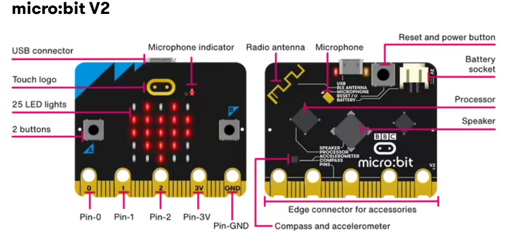
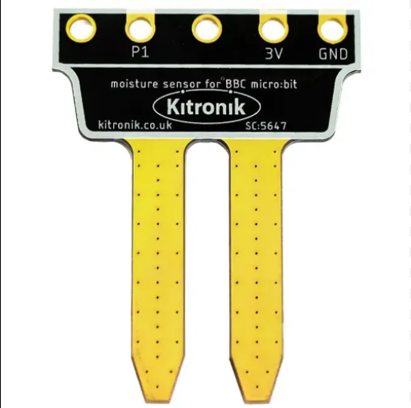
Flowchart explaining system architecture and actions:
To create this flowchart, I used miro to create my flowchart and it explains all the system architecture and the processes it does.It is on the next slide:
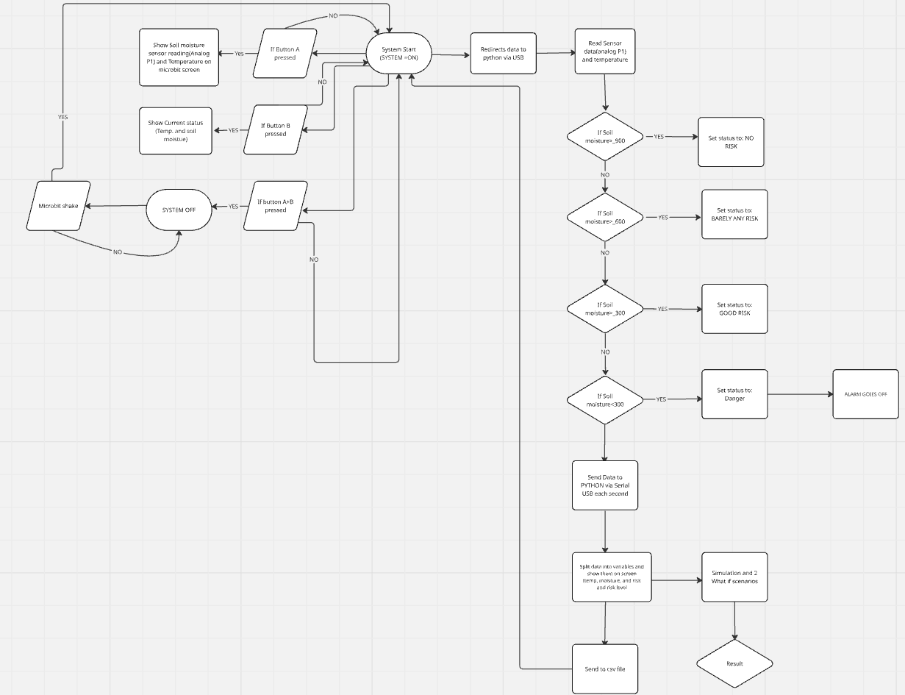
BR1:
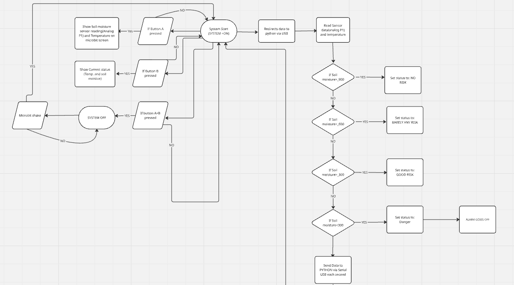
To accomplish BR1, I will use a Microbit. The digital input is that pressing A you will see temperature and moisture values. The analogue input will be the data collected by the moisture sensor. The output is created by the risk threshold which is shown on the microbit LEDs and in python and csv too. It can be turned on and off manually but works automatically when started.
BR3 & AR1:
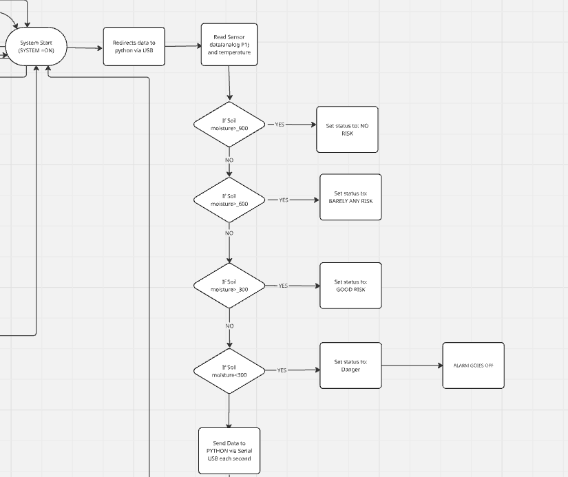
To complete AR1 and BR3, both related, I will take the microbit data and redirect it to python using Serial USB. The python will store the data into the csv file. It will then use the data to run a calculation to give a drought risk for each row of data (BR3). It will then use the data in the csv file to calculate an average drought risk based on all the data collected (AR1).
AR3:
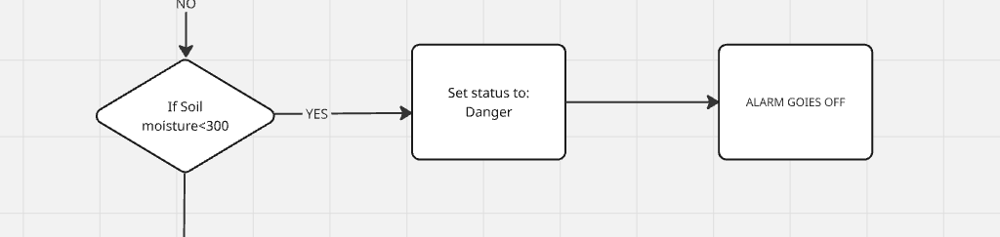
For AR3, the adaptive feedback system will be that if the moisture is <300, then an alarm sound will be made with “DANGER” displayed on the microbit.
BR2 & AR2:
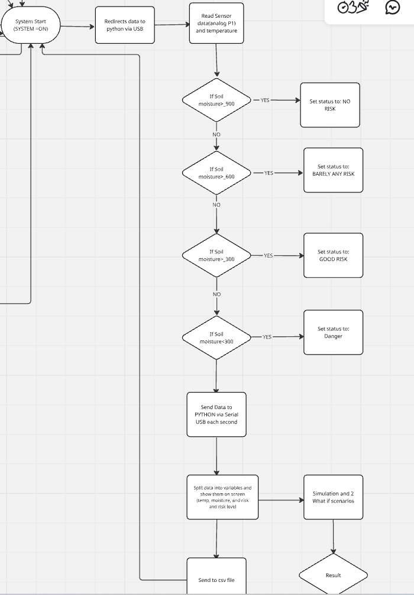
For BR2 and AR2,upon establishing the risk condition, the temperature, soil moisture level and the risk status will be sent to python subsequently via serial USB, the python script takes this data, reads this data, splits them into 3 different variables, shows them onto the screen and then appends them to the csv file(BR2) Then it generates them 2 what if scenario regarding temperature and moisture and giving them the risk status for that and this loop repeats(AR2).
Create
Week 1:
I started the html report.
I read the brief word by word to deduce all the things I needed – definitions, conditions and objectives.
Thought of some ideas for the project as well.
Week 2:
Worked on ideas further
Continued the html report
Started my Investigation section of the report and conducted research about the plan and design.
Week 3:
Started the microbit code and got my required sensors.
Added more to the report like an unfinished flowchart (developed later fully).
Thought of some ideas for the project as well.
Week 4&5:
Christmas Break.
Week 6:
Worked upon completing the flowchart.
Thought of ways to create the python model.
Week 7:
Worked on the layout of the report.
Finished the Basic requirements stated in the brief.
Week 8:
Completed my python code.
Developed the “What-if” statements.
Overall Completed the Advanced Requirements.
Week 9:
Fixed some problems I was having while transmitting data to python.
Finished all the report apart from the CREATE section.
Week 10:
Finished the remaining part of the portfolio.
Finalized the artefact and all the code and tested them.
Week 11:
Made the video demonstrating the artefact.
Finalized everything such as the zip.file and the artefact.
Submitted the project.
TESTING
Unit Testing
Throughout the design and create phase, I kept testing my model at every step. Whenever I added a new piece/block of code to the microbit, I tested it to check if it was functioning properly. Towards the end of the project, I ran the code about 7-8 times alongside the python bit to see if it did its inteded function. This took me about 40 mins in class to perform but those 40 mins were very essential.
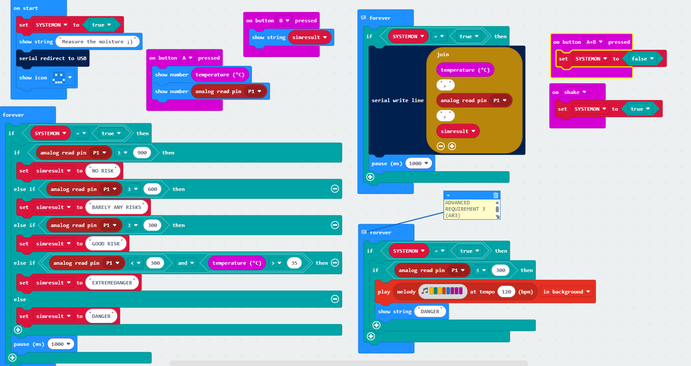
As for the python coding, I had to keep testing it after every line of code because it is more sensitive to errors and harder to code than microbit blocks. I would run the code subsequently after every new line and whenever there was an error, I would try to fix it and look for any obvious errors like spelling mistakes. If I couldn't fix it, I would research about it on online forums like Quora and Github. After fixing, the code, I would test it thrice before approving it.
Test Tables
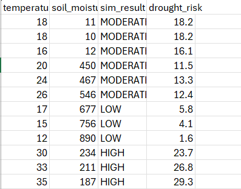
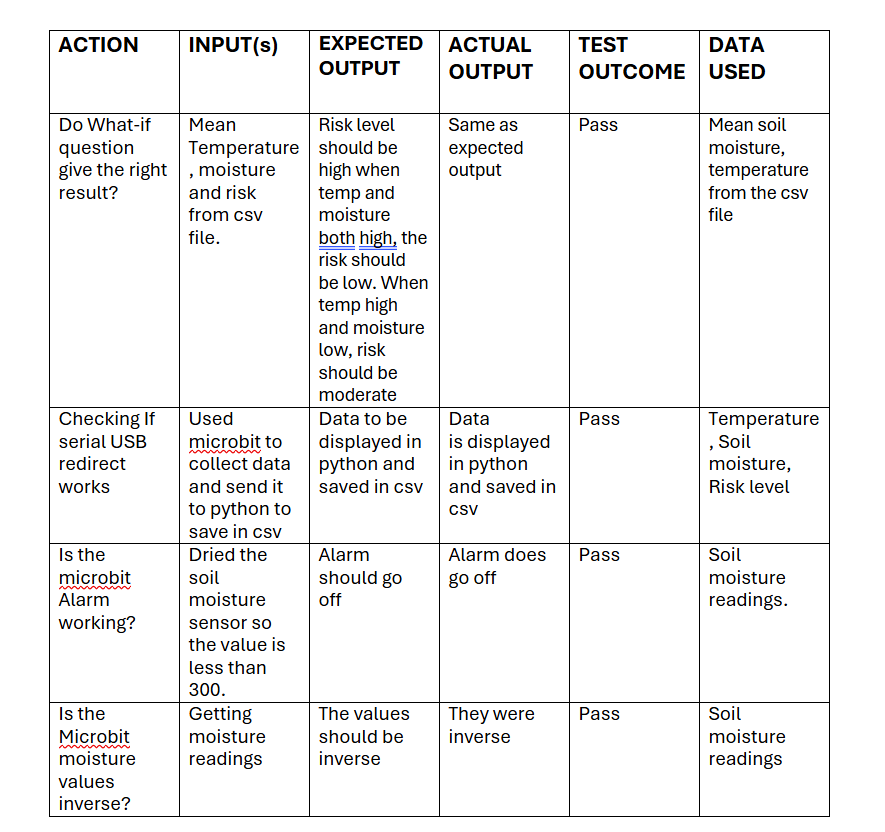
Important Code
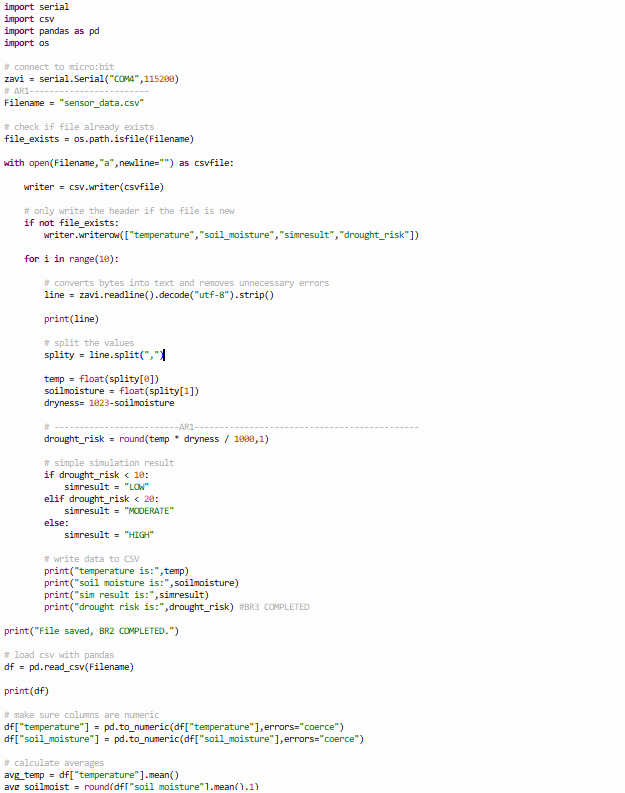
This code is particularly very important it assigns communication with microbit and lays the framework for the project to be developed upon. As explain in the image step by step, this is where the live data from microbit is taken formatted correctly to then being put into the csv file, essentially making it the centre of the whole model.
Problems
The only real problem I ran into was that my microbit would send the data in an inaccurate format, resulting in it being shown in the python file as jumbled of characters with missing spaces and letters, I looked up some videos on Youtube and researched on Quora as well. Eventually, I found out that the solution was quite simple and it took me about 5 mins to fix it. The fix can be seen below:
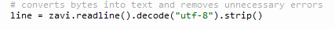
Description of the Model
The system can be turned on and off manually. It takes real time values like temp. And soil moisture and sends them to python to run calculations on drought risks and its levels and its all saved in a csv file.
Upon receiving values, python converts the bytes into text and removes errors and splits them into 4 different variables- Temperature (Celsius), Soil moisture(0-1023), Risk status and the Drought risk. It converts the temperature and soil moisture readings into numbers and the risk status remains as a string while drought risk is a calculation scaled down by a thousand to 1d.p.
These values are added to the csv file as separate rows where they are stored + put into pandas dataframe as well. Then it changes the temperature and moisture values into numbers for the csv file, preventing math errors. Then you get an average risk value based on mean of these.
Moving onto AR2 it sets out a drought risk scale and generates the what if questions where the user can enter the values accordingly and gets the drought risk result.
The system can be turned off by pressing Button A+B and started up again by shaking the microbit. Temp. And moisture values can also be retrieved by pressing button A, while risk status be Button B.
Finally, AR3: when the moisture reading is >850, a buzzer is triggered.
Evaluate
BR1:The requirement is met exactly as I planned in the Plan & Design section. On pressing A on the Microbit you get the digital input, which shows temp and moisture on microbit. The analogue input- soil moisture value is effortlessly collected too. The output is created by the risk threshold and the risk level is shown on the microbit, csv and python. The system is turned on at start and works until the button A+B pressed. Restarts by shaking the microbit.
BR2:The temperature, soil moisture and is sent to python and stored in microbit. Had no problems here.
BR3:The data sent from microbit is stored in a csv file and then the python runs a simulation based on the drought risk. It also displays different risk levels based on the inputs. I had a little problem with the data not being clean but then I downloaded the code as a file on the microbit.
AR1:Just as in the Plan section, without any problems, based on all the collected data in the csv file so far, my python model determines a disaster risk possibility based on a calculation.
AR2:I coded 2 What if questions with at least one changed key variable. It perfectly simulates a change in predicted risk. Had no problems here.
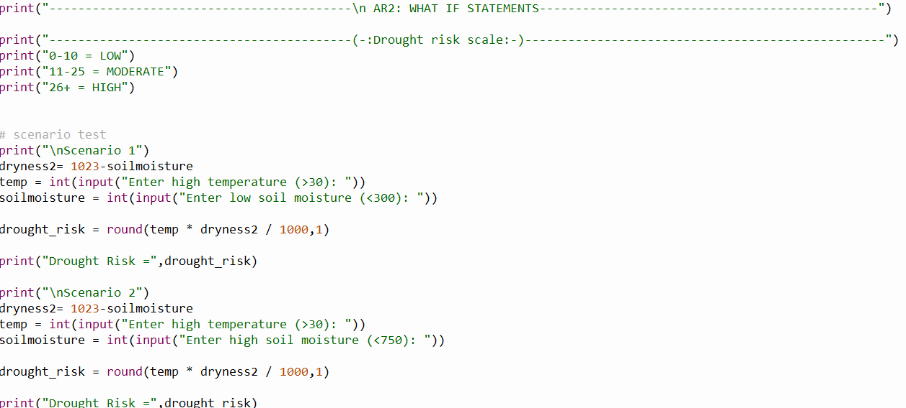
AR3: Like I mentioned in the Plan section, I implemented an alarm into the microbit so whenever the moisture is <300, the buzzer goes off.
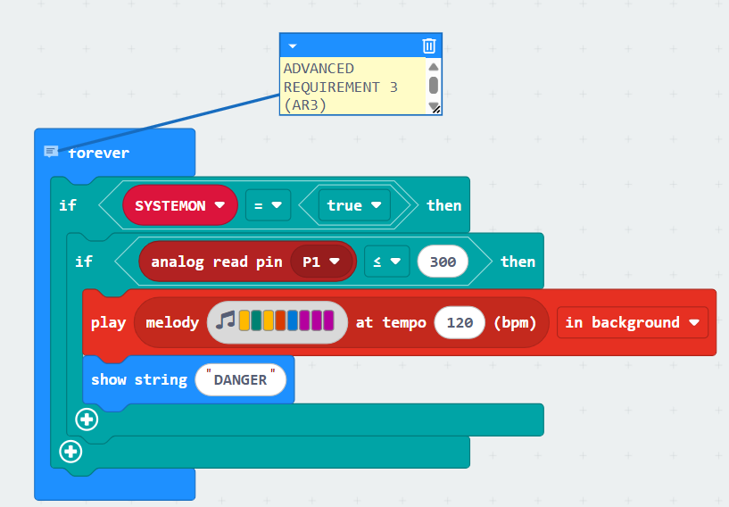
If I was to do the project again, I would make the What-if question more interactive—user can put in any value they like instead of being restricted to a set of values. I would also use a servo to pour water into the soil instead of an alarm for AR3.
![]()